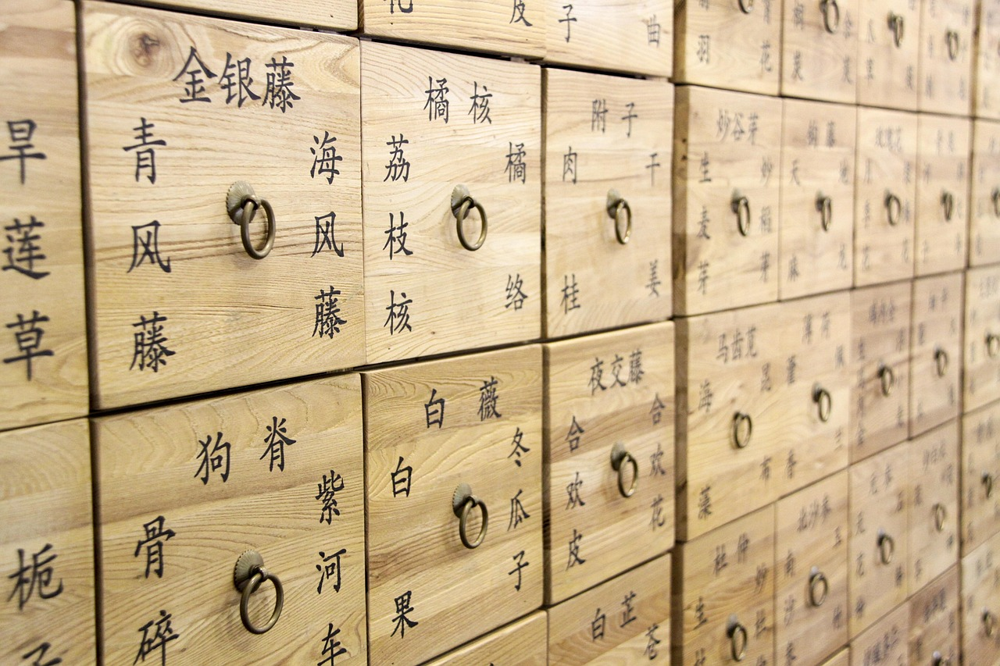
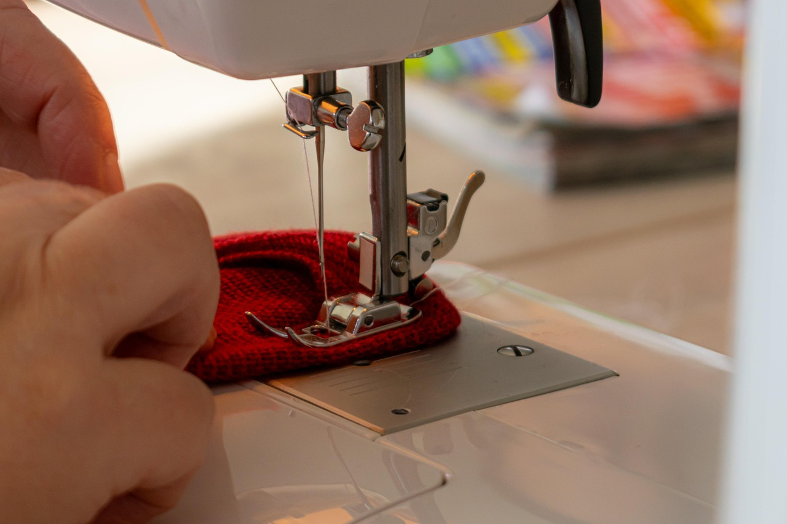
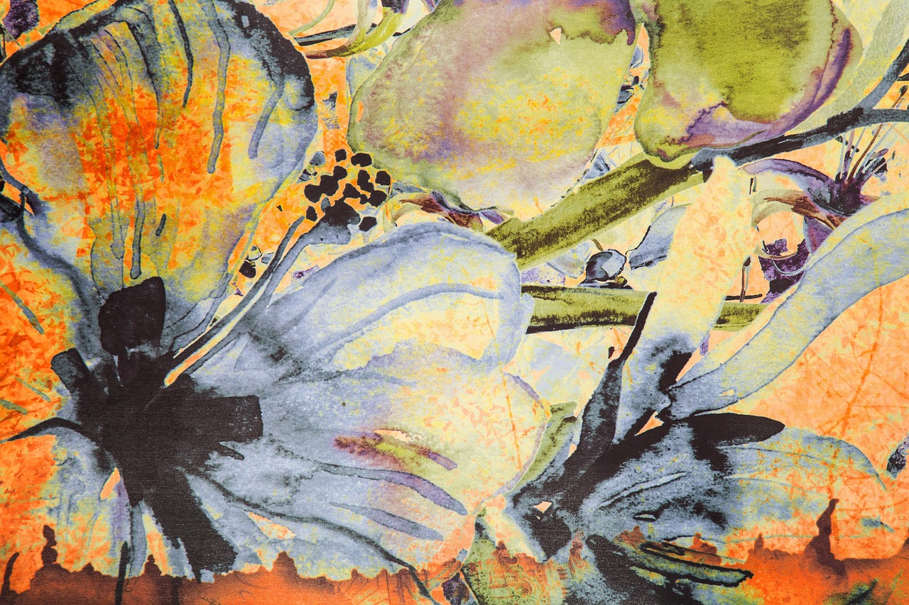

출처 기반 답변
모든 답변에 원전 문헌과 구절을 붙여, 근거를 직접 확인할 수 있습니다.
About
20년 동안 실험실에서 뇌와 신경을 연구했습니다. 근거를 찾고, 출처를 따지고, 데이터로 말하는 일이 몸에 배었지요. 이제 그 습관으로 우리 조상들이 남긴 약선(藥膳)과 고조리서의 지혜를 공부하고, 누구나 믿고 찾아볼 수 있는 지식으로 만들려고 합니다.
신경과학 분야에서 20년간 연구원으로 일했습니다. 가설을 세우고 검증하며, 근거 중심으로 생각하는 법을 익혔습니다.
성인학습자반에서 약선을 공부하고 있습니다. 음식이 곧 약이 된다는 식약동원(食藥同源)의 철학을 배우는 중입니다.
출처 기반 전통 고조리서 지식 탐색 AI 플랫폼을 준비하고 있습니다. 과학과 전통을 잇는 다리를 놓고 싶습니다.
Startup
『산가요록』, 『식료찬요』, 『음식디미방』처럼 귀한 옛 문헌 속 약선 지식은 흩어져 있고 찾기 어렵습니다. 인터넷의 건강 정보는 근거가 불분명한 경우가 많고요. Yak-S는 AI가 답할 때마다 어느 문헌의 어느 대목인지 출처를 함께 보여 줍니다.

모든 답변에 원전 문헌과 구절을 붙여, 근거를 직접 확인할 수 있습니다.
옛 조리서와 의서의 식재료, 조리법, 효능 정보를 체계적인 지식으로 정리합니다.
"기력이 없을 때 먹는 음식은?"처럼 자연어로 물어도 관련 문헌을 찾아 연결해 줍니다.
Hobbies
연구와 공부 사이에 저를 채워 주는 것들입니다.

한 땀 한 땀 박음질하다 보면 생각이 차분해집니다. 옷과 소품을 직접 만드는 즐거움이 큽니다.

천 위에 그림을 그려 일상의 물건에 색을 입힙니다. 세상에 하나뿐인 작품이 됩니다.
산길을 오르며 숨을 고르고, 정상에서 탁 트인 풍경을 바라보는 순간을 좋아합니다.